Floyd – is clean one page parallax responsive and retina ready Drupal theme. It is great, professional and easy to use. You can use it for, business, Photo Studio, Freelancers, Portfolio Theme, Creative Agency etc.
Thank you for choosing ST Floyd as the template for your business. This document will guide you to install and configure some basic functions of ST Floyd.
You may install in a local environment first or you can start with a hosting straight away. Drupal consumes more resources than other CMSes so do not pick a cheap hosting.
We recommend this following hosting configuration:
More info on Drupal requirements is availabe at http://drupal.org/requirements
New installation is recommended as it comes with all sample data so you will have a site exact as our demo. Follow the steps below to get started:
1. Download the latest version 7.x of Drupal and follow the standard installation process.
2. Please extract the floyd_fullsite_package.zip file, you will see the sites folder with 3 subfolders as:
3. Upload these three folders to your sites folder on your root directory of your website (using FTP client such as Filezilla)
4. Go back to your new website, click on Modules link, and enable the Backup and Migrate module.
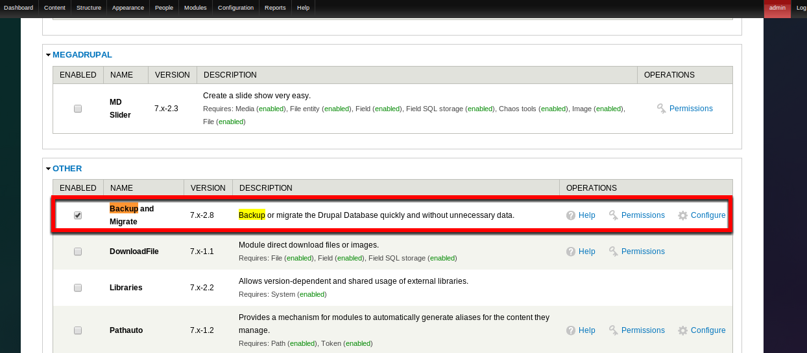
5. Browse the Backup and Migrate tool at Configuration - System - Backup and Migrate, click on the Restore tab and upload the floyd.sql.zip found on Assets folder of the Themeforest download package. Then choose Restore now
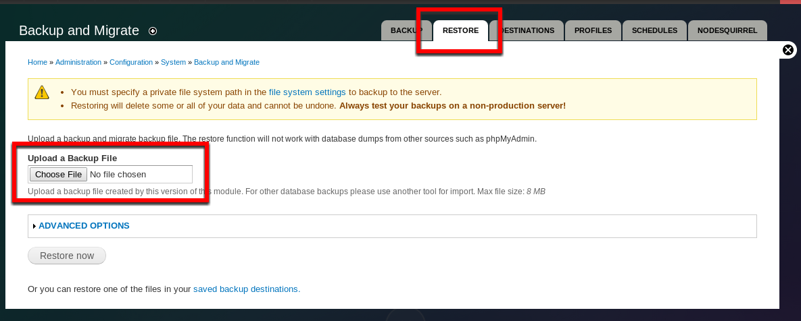
6. The site is good now. Please be noticed that the admin user and password has been reset to admin/admin. You may need to change it to yours by clicking on the Hello admin link on the top right menu.
Done. You are good to go.
If you have an existing website and you want to install the theme only, please follow these steps:
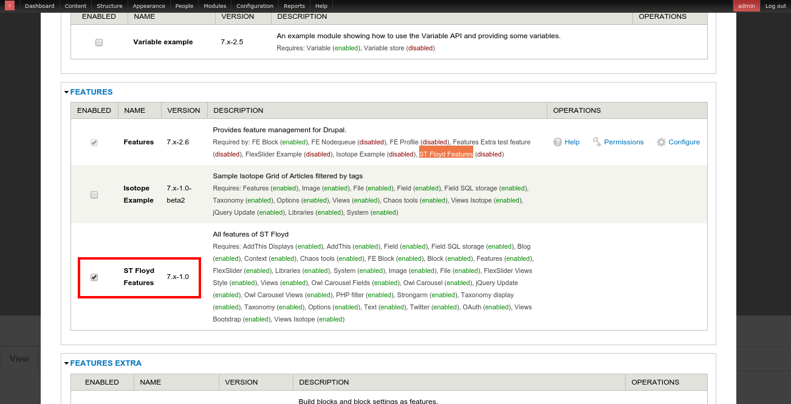
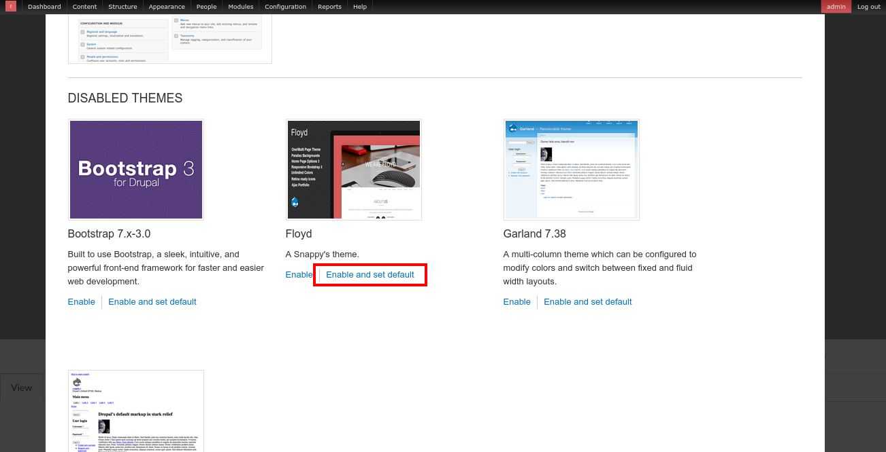
All settings including views, block, context, image styles and etc ... are ready. Go to "Work with content" and "Page builder" to build your site page You can now use them as you want on your website. However, this method is recommended for experienced Drupal developers only.
Frequently, there will be updates on Drupal core and contributed modules. You may need to update them to latest versions to minimize bugs and security holes.
Remember to backup your website! If there is anything wrong, you won't lose anything.
Module updating is convenient using the admin interface. You can do it by just a few clicks.
For Drupal core updating, automatic update via admin interface is not supported at the moment. You have to do it manually.
If everything works, your Drupal site is now updated to the latest core.
Clicking on the Add content button on the top left, you will proceed to the next screen where you can choose content type.
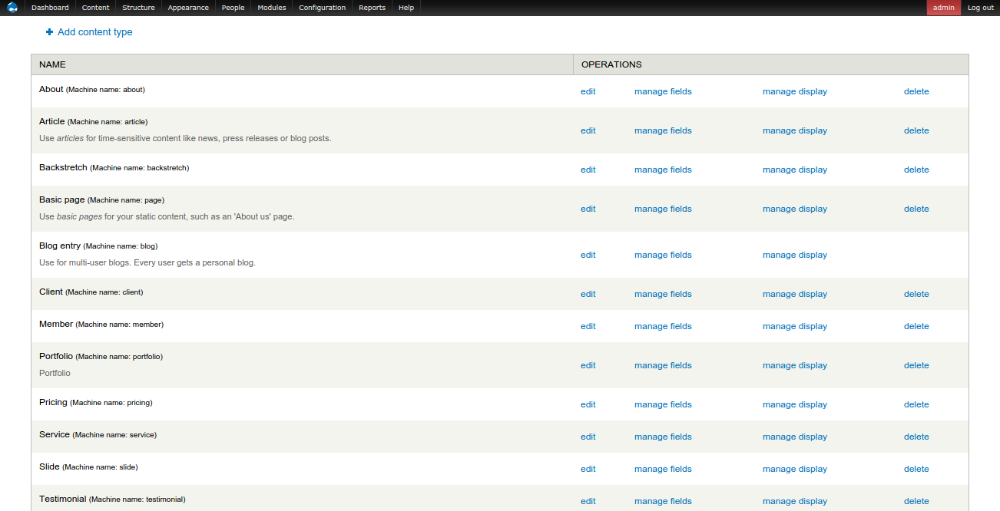
The content type names speak for itself:
Just click on the content type you want to create, fill in information and click on Save.
Alternatively, please click on the content link on the top left, choose the content type and click Filter. It will list all content of that specific type below. You can click on Edit link beside the node you want to edit.
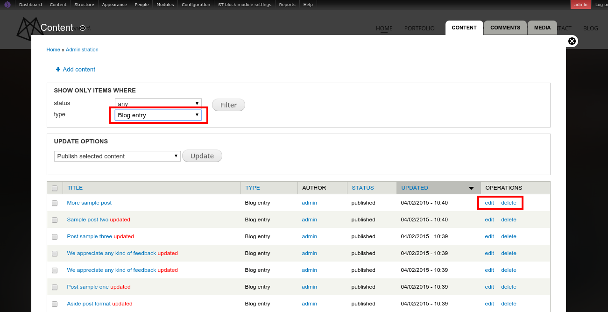
Page in this theme was built by basic page and context
Control display blocks with context
We're developed "ST Block" module allow easy configuration block with very much features as: Set block id (good for one page), background image, background video, block animation, background parallax,..
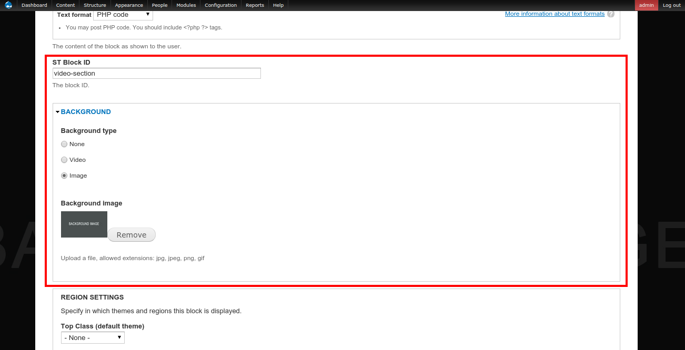
This is the layout of the theme, please keep it as the reference when you are working with the layout manager.
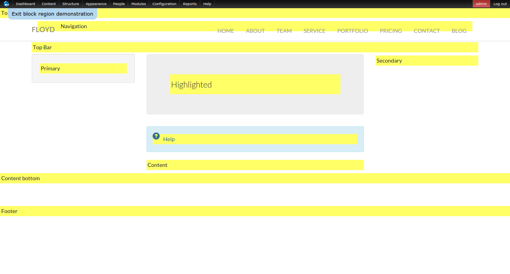
The heart of the layout is the Content region. In any pages, the main content will be located here. You will then place other blocks in relative to this main region.
Please click on Appearance, then choose "Settings" of floyd
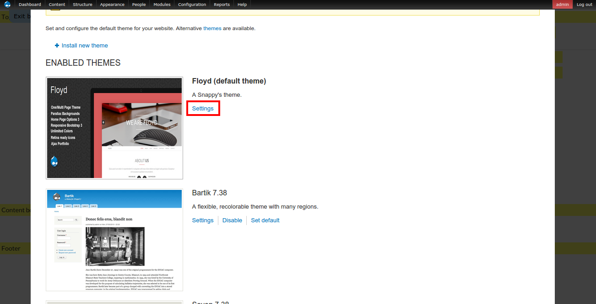
Scroll to the middle of the page, you can upload your own logo and favicon here.
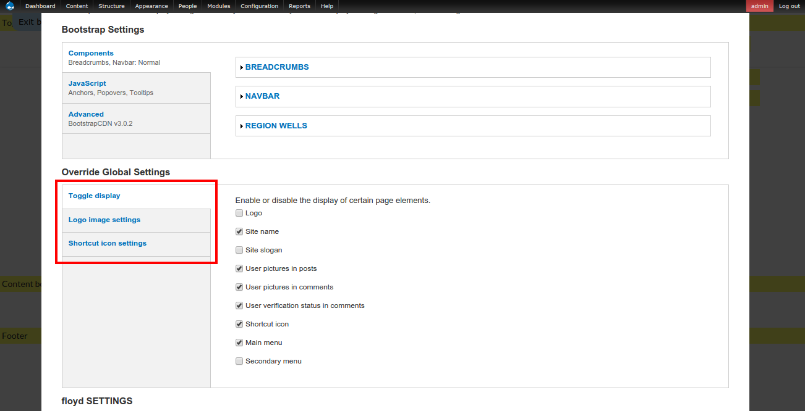
Floyd provide 5 pre-build color skills and unlimited color for you.
To configure your map please set your lat address and long address at here
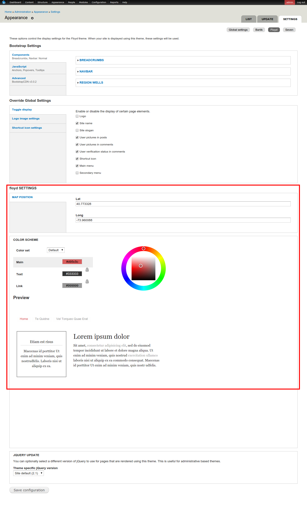
You can change site information such as site name, site slogan, email address, default front page under Admin - Configuration - Site information .
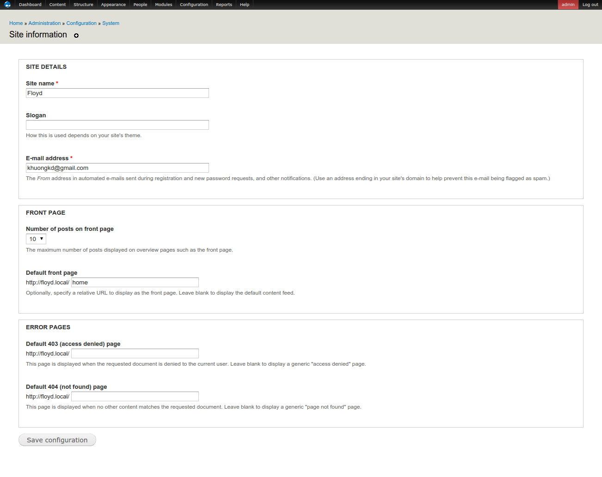
To change the contact email which guests send you via the contact form, please go to Admin - Structure - Contact forms. Then click on Edit and change the email address to yours.
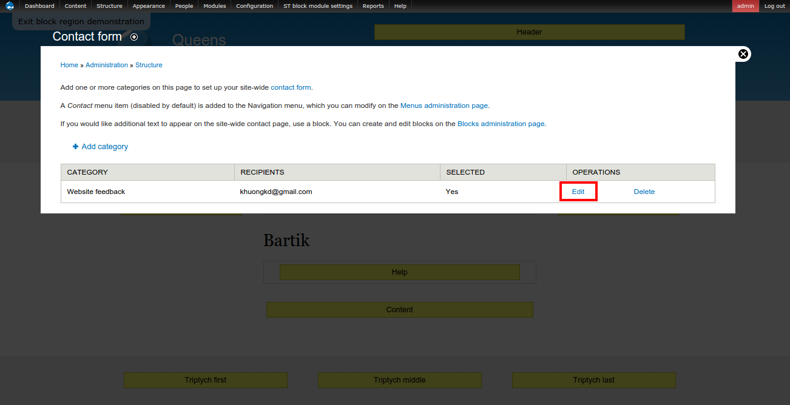
If you are familiar with Drupal, blocks and views are very the heart of Drupal. In this short readme file, we can not teach all about them. Some links are useful:
Good news is, we have created a lot of blocks and views for you. You just use it.
Blocks
The list of blocks are presented on Admin - Structure - Blocks.
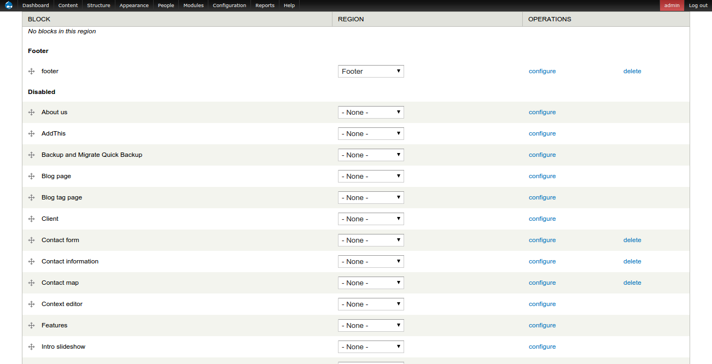
Some notices that you should be interested in:
Views
Views can be accessed on Admin - Structure - Views. If you have some knowledge with Drupal views, feel free to edit and customize them.
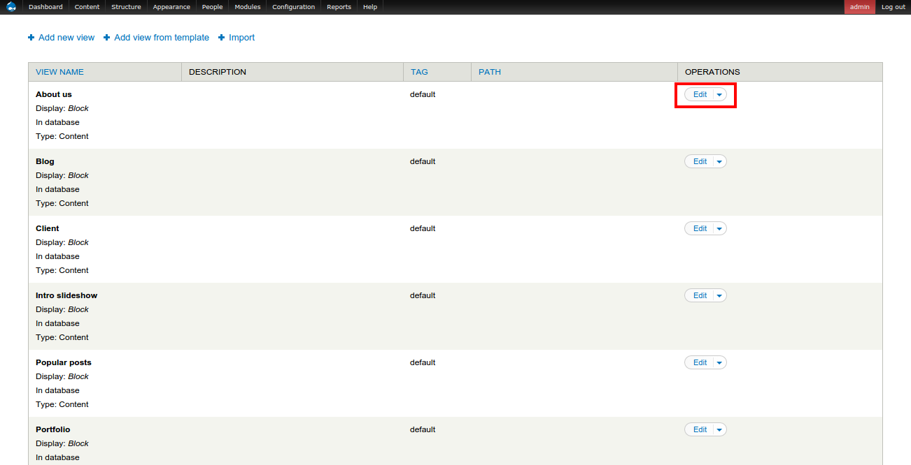
This theme contain alot of elements that you can use with HTML. They are:
The most convenient way to use these elements are copying the HTML or PHP code and change to yours.
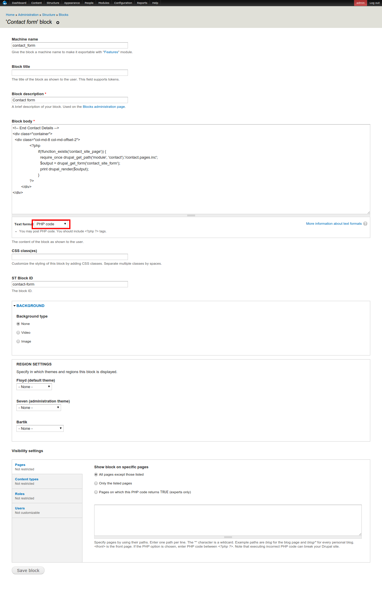
Just open the style demo page, edit it. Then click on the Source button of the CK Editor and copy the relevant HTML code of the element.
Thank you for purchasing ST Floyd!
If you face problems with the installation or utilization of our product please do not hesitate to contact us via our support email: khuongkd@gmail.com
On Snappy Themes, we provide a colletion of beautiful and high quality Drupal themes as: oliver, element, Aaika or Copper